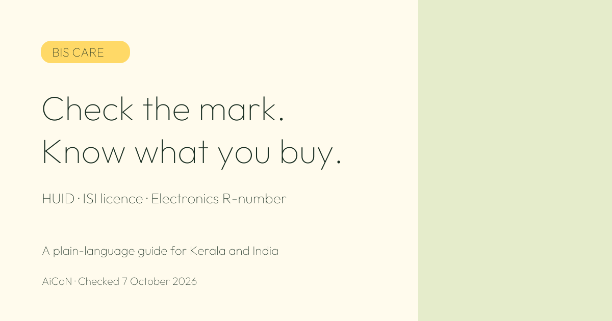

BIS Care: Check HUID, ISI Licences and Product Marks
Buying gold jewellery or a product with a BIS mark? BIS Care lets you look up the number behind the mark. This guide explains the checks available and what they cannot prove.

Explainer by AiCoN - not a government publication
What is BIS Care?
BIS Care is the consumer app from the Bureau of Indian Standards (BIS). BIS is India's national standards body. The official BIS page lists the app for Android and iOS and says it is free to download. It lists support for 12 languages: 10 regional languages, Hindi and English.
The app helps you check the details linked to certain product marks. It also lets you raise complaints about product quality or misuse of BIS standard marks. A printed logo alone is not the same as checking the number behind it.
Who can use it in Kerala and India?
This is a consumer information service, not a cash benefit or scholarship. The official page does not list an income limit or a Kerala-only rule. It tells users to install the app and register their mobile number. You need a compatible phone and internet access.
It can be useful when buying jewellery in Kerala, checking an ISI-marked household product, or looking up an electronic product with an R-number. You do not need to apply for a government benefit to use these lookups.
What can you check?
| Jewellery HUID | Use “Verify HUID” to look up a hallmarked jewellery item's HUID number. |
|---|---|
| ISI-marked products | Use “Verify Licence Details” to check the product licence. |
| Electronics R-number | Use “Verify R-Number under CRS” for the registration number on electronic products. CRS means Compulsory Registration Scheme. |
| Complaints | Use “Complaints” for product quality concerns or misuse of BIS standard marks. |
How to use BIS Care, step by step
- Open the official BIS page linked below. Use it as your starting point, rather than a download link from an unknown message.
- Find BIS Care in Google Play or the Apple App Store. Check that the listing is from BIS. Install it and register your mobile number as instructed.
- Read the number on the product, its label or the jewellery tag. Choose the matching check: HUID, licence details or R-number.
- Enter the number carefully. Compare the returned details with the item and the seller's information.
- If the number is not found or the details do not match, ask the seller to explain before buying. Do not treat an unmatched result as a successful check.
- For a quality concern or suspected misuse of a mark, open “Complaints” and follow the app's prompts. Keep the bill, product details and clear photos ready. Save any acknowledgement the app provides.
Cost and deadlines
BIS says the app is free to download. Your normal mobile data charges may still apply. The official app page does not state an application closing date. This is a service guide, not a time-limited offer.
Important limits
A database lookup helps you check records. It does not physically test the item in your hand. Do not treat a matching number as a promise that every claim made by the seller is true. Keep your purchase bill and compare the record with the actual item.
The app's menus can change. Follow the current on-screen instructions. This guide does not promise a refund, a fixed complaint response time or a particular result. A complaint is a request for review, not a guaranteed payment.
Frequently asked questions
Can I check a gold jewellery HUID?
Yes. BIS lists “Verify HUID” for checking hallmarked jewellery with a HUID number.
Is the app only for gold?
No. BIS also lists licence checks for ISI-marked products and R-number checks for electronic products.
Can I report misuse of a BIS mark?
Yes. The official page lists the “Complaints” option for product quality and misuse of standard marks. Follow the current app prompts.
Does this guarantee a product is safe?
No. The lookup checks the details linked to a number. It is not a physical inspection or a test of the product you are buying.
Does it work for consumers in Kerala?
The official page describes a consumer app and does not list a Kerala exclusion. You still need a supported device and must follow the app's registration steps.
Official source
Source: BIS Care App - Bureau of Indian Standards. Checked 7 October 2026. Use this official page for the latest features and download guidance.